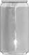
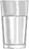
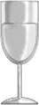
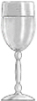
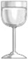
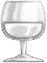
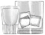

| 12 oz beer | 8-9 oz malt liquor | 5 oz wine | 3-4 oz fortified wine (such as sherry or port) | 2-3 oz of cordial, liquer, or apertif | 1.5 oz of brandy (a single jigger) | 1.5 oz of spirits (a single jigger of 80-proof gin, vodka, whiskey, etc) |
|  |  |  |  |  |  |  |
| ~5% alcohol | ~7% alcohol | ~12% alcohol | ~17% alcohol | ~24% alcohol | ~40% alcohol | ~40% alcohol |